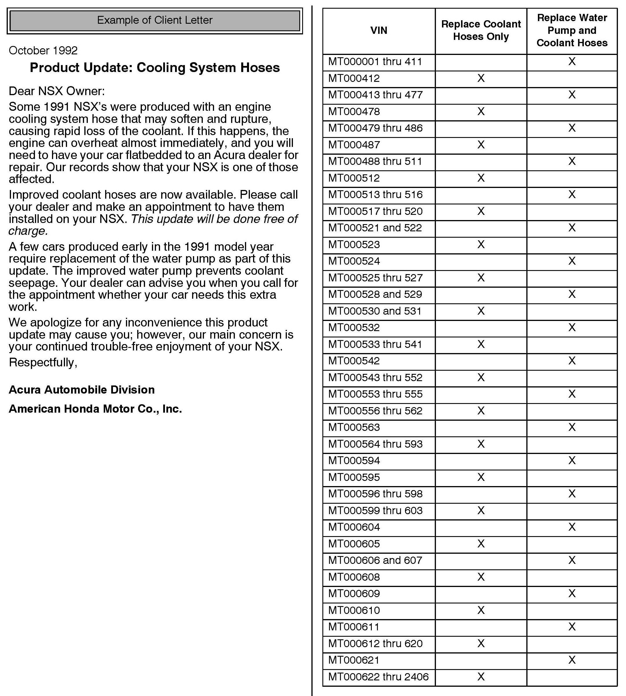
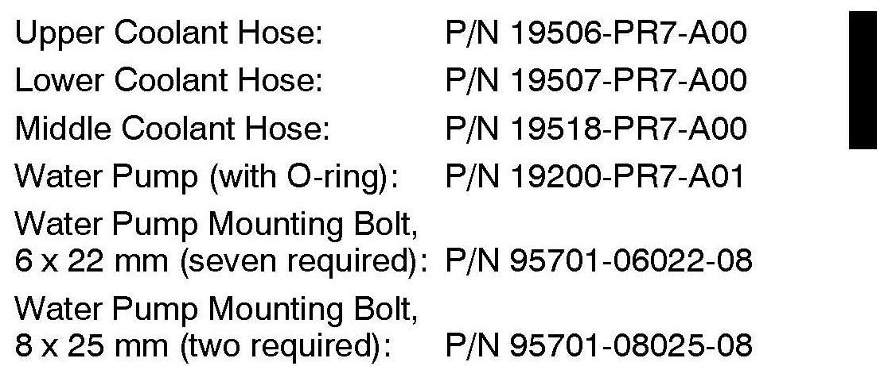
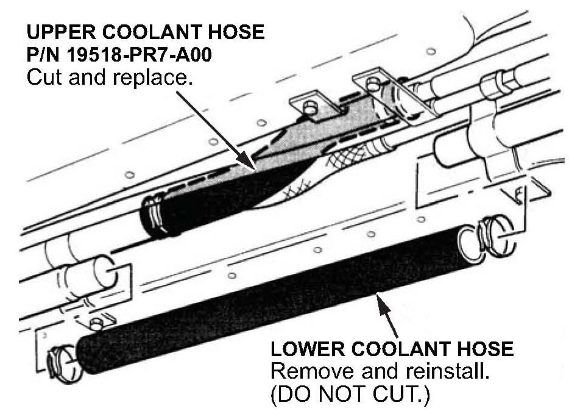
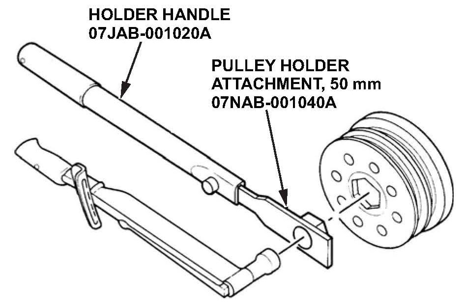
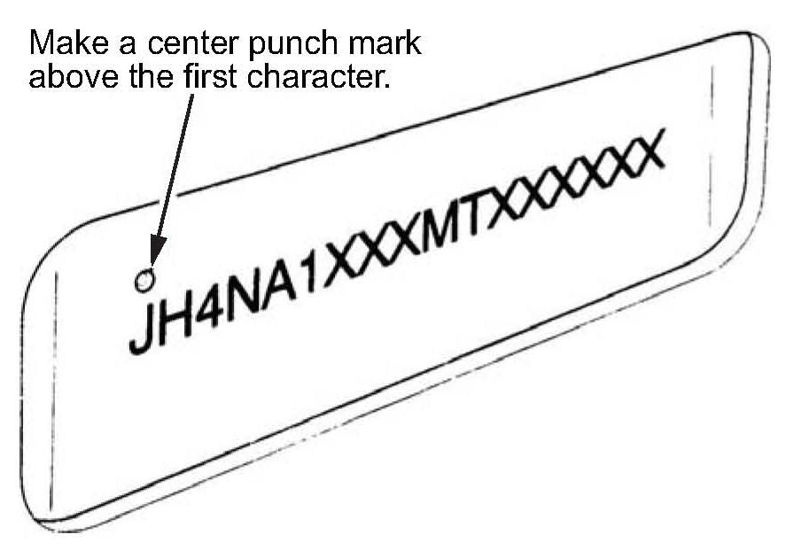

Campaign - Cooling System Updates
92-030October 24, 2012
Applies To:
1991 NSX - From VIN JH4NA1 ...MTOOOOO1 thru JH4NA1 ...MT002406
Product Update: NSX Cooling System
(Supersedes 92-030, dated October 27,1992, to revise the information marked by the black bars and asterisks)
*REVISION SUMMARY
In PARTS INFORMATION, the coolant hose kit was replaced by individual hoses.*
BACKGROUND
One of the engine coolant hoses can soften over time and may eventually rupture. The water pump shaft seal on some early VINs may seep coolant.
CLIENT NOTIFICATION

Owners of affected vehicles were contacted by mail and asked to take the car to a dealership for repair. An example of the original 1992 client letter is at the end of this bulletin.
Before beginning work on a vehicle, Acura dealers should verify the car's eligibility by checking at least one of these items:
^ The client has a notification letter.
^ The vehicle is shown as eligible on a VIN status inquiry.
CORRECTIVE ACTION
Replace the cooling system hoses with new hoses. If necessary, also replace the water pump. Do an iN VIN status inquiry, or check the VIN Applicability Chart at the end of this bulletin to determine which procedure applies to a particular vehicle.

PARTS INFORMATION
WARRANTY CLAIM INFORMATION
In all cases, file a warranty claim for replacement of the coolant hoses.
If the vehicle needs a new water pump installed (see VIN chart), file a second warranty claim for that operation.
Replace Coolant Hoses, Refill and Bleed System:
Operation Number: 113110
Flat Rate Time: 2.0 hours
Failed Part: P/N 06195-PR7-A00
Defect Code: 64600
Symptom Code: J6000
Replace Water Pump:
Operation Number: 113120
Flat Rate Time: 3.3 hours
Failed Part: P/N 19200-PR7-AO1
Defect Code: 64700
Symptom Code: J6100
REPAIR PROCEDURE
NOTE:
This procedure is in an outline form that you can also use as a checklist for the repair. If you need more details, bookmark the following procedures in the 1991 NSX Service Manual, or view them online:
^ Engine Coolant Refilling and Bleeding
^ Timing Belt Removal
^ Timing Belt Installation
^ Water Pump Replacement
1. Drain the cooling system. Collect the coolant in a clean container.

2. Carefully remove the lower coolant hose in the shift linkage tunnel. Do not damage this hose; it will be reused.
3. Remove the upper coolant hose and install a new hose.
NOTE:
When removing a hose, carefully slit the end with a razor blade so you can remove the hose without damaging the aluminum pipe. Do not scratch the pipe with the razor blade; it may cause a leak.
4. Reinstall the lower coolant hose.
5. Remove the expansion tank. If you are not replacing the water pump, go to step 7.
6. Water pump replacement only: Do the timing belt removal and water pump replacement procedures. When installing the crankshaft pulley, apply engine oil to the bolt threads and the shoulder/washer mating surface. Use the special tools as shown to torque the pulley bolt to 250 N.m (25 kg-m, 181 lb-ft).

NOTE:
If using the paper service manual, do not follow the procedure for torquing-loosening retorquing the bolt.
7. Slit and remove the two large engine coolant hoses. Replace them with new hoses.
8. Install the expansion tank.
9. Refill and bleed the cooling system.

10. Center-punch a completion mark above the first character of the engine compartment VIN.

Disclaimer